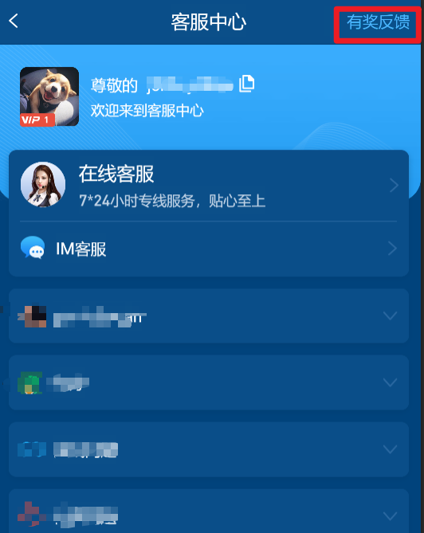
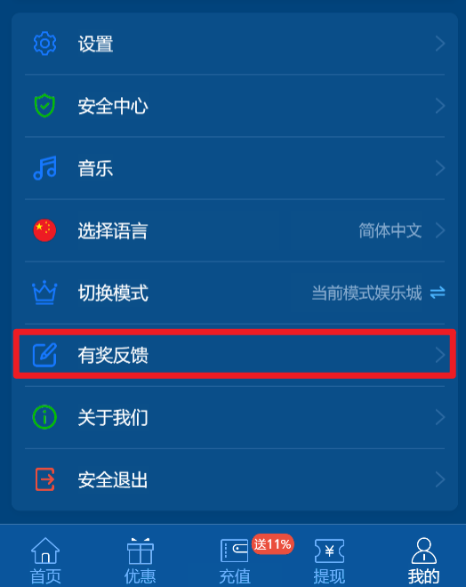
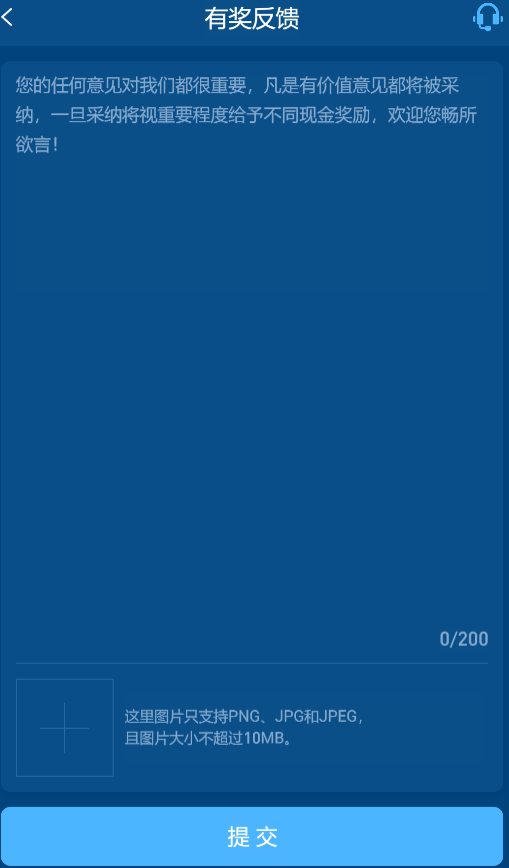
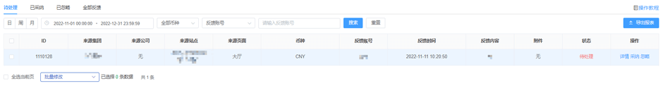
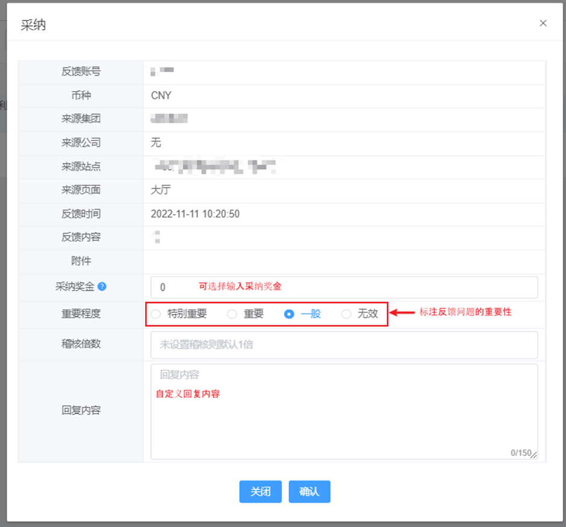

一、有奖反馈
（1）会员反馈入口： 点击【客服】按钮，再右上角点击【有奖反馈】或 进入自营游戏中的游戏界面，点击【更多】 - 【有奖反馈】或 点击【我的】按钮，再列表点击【有奖反馈】，即可描述问题建议



（2）页面操作说明：页签分为：待处理，已采纳，已忽略，全部反馈，待处理中采纳后，则回复一条通知消息给到会员；具体内容为：我们已经收到了您的反馈“会员反馈内容”+采纳可获得奖励佣金

